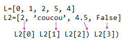
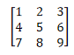

Types construits⚓︎
(chaines de caractères, listes, dictionnaires et tuples)⚓︎
Les listes⚓︎
En python (pas avec les autres langages) une liste est un ensemble d’éléments du même type OU NON.

Indexation (posistion dans la liste)⚓︎
L'index d'un élément, correspond à sa position. On compte à partir de 0.
1 2 3 4 | |
Longueur d'une liste (nombre d'objets qu'elle contient)⚓︎
len() Longueur d’une liste : renvoie le nombre d’éléments
1 2 | |
Remarque
Le denier index de la liste correspond donc à la longueur -1.
Découper une liste⚓︎
On peut avoir besoin d'utiliser seulement une partie de la liste. Seulement de début, ou seulement la fin par exemple. On peut alors utiliser les slices pour ne prendre que certains éléments.
L[a:b] correspond à la partie de la liste dont les index sont commpris entre a et b-1 (attention b est exclu).
Si a n'est pas rensigné, on commence au début, si b n'est pas renseigné, on va jusqu'à la fin.
!!! example 'exemples'
1 2 3 4 5 6 7 8 9 | |
Remarque
L'utilisation du code L2=L[:] permet de faire une copie de la liste. Ce code n'est pas équivalent à L2=L qui se contente de faire pointer L2 vers L. Donc dans le dernier cas si on modifie L cela modifie également L2 alors qu'avec l'astuce du slice, on fait une copie dont la modification est indépendante.
Créer une liste⚓︎
Une liste peut etre créer directement si l'on sait ce qu'elle doit contenir :
1 | |
1 | |
Si on souhaite ajouter des éléments un par un, on peut utiliser la méthode L.append(element) qui va ajouter un élément à la fin de la liste.
1 2 3 | |
1 | |
Plus difficile : Liste par commpréhension
On peut créer une liste de manière succinte en une seule ligne, qui correspond en fait à la construction par boucle. [element boucle condition]
1 2 3 4 | |
Liste non exhaustive des méthodes de listes
liste.append(truc): ajoute l’élément unique truc à la fin de la listeliste1.extend(liste2): rajoute en fin de liste1 la liste2. Equivaut à faire liste1 = liste1 + liste2min(liste): retourne la valeur minimum d’une listemax(liste): retourne la valeur maximum d'une listeliste.sort(): trie une liste dans l’ordre croissant (cf. doc pour l’ordre décroissant et les options)liste.remove(valeur): supprime la première occurrence de valeur dans la listeliste.insert(index, valeur): insère valeur à l’indice indexliste.reverse(): inverse les éléments de la listea=liste.count(valeur): la viaiable a prend pour valeur le nombre d’occurrences de valeur dans la listeb=liste.index(valeur): la variable b prend pour valeur l’index de la première occurrence de valeur dans la listein(): permet de savoir si un élément est dans une liste>>>2 in(L)renvoieTrueouFalse
Les tableaux : listes de listes⚓︎
Un tableau est une liste de liste. Chaque élément de la liste est un ligne du tableau.

1 | |
tab3x3[1] est la 2e ligne du tableau
tab3x3[1][0] est le 1er élément de la 2e ligne
1 2 3 4 | |
Remarque
Toutes les méthodes de listes sont applicables aux tableaux puisque ce sont des listes.
Création d'un tableau de N lignes et M colonnes
On commence par créer un tableau vide dans lequel on ajoute N lignes vides. Puis on ajoute autant de fois qu'il y a de colonnes ce que l'on veut dans chaque ligne du tableau.
1 2 3 4 5 6 7 | |
Parcourir un tableau dont on ne connait pas les dimensions
1 2 3 | |
tab[i][j] est l'élément de tableau de la ligne d'indice i et de la colonne d'index j.
Les chaînes de caractères⚓︎
Un texte est un ensemble de caractères (lettres). Tout ce qui concerne les listes s'applique aux chaînes de caractères (sauf certaines des méthodes cités).
Cetaines méthodes sont spécifiques aux chaînes de caractères :
chaine.split()qui permet de découper une châine de caractères. On choisit le séparateur, par défaut c’est l’espace : on obtient alors tous les mots de la châine. On verra dans le chapitre sur les données qu’un autre séparateur peut être utile (souvent la virgule pour les fichier .csv). On précise le séparateur entre les parenthèses.“séparateur”.join(liste)fait l’inverse du split. Il crée une chaîne à partir d’une liste de chaînes. On peut là aussi préciser le séparateur.chaine.find(sousChaine)cherche la position d’une sous-chaîne à l’intérieur d’une chaîne.chaine.index(caractère)cherche la position d’un caractère à l’intérieur d’une chaîne.chaine.count(sousChaine)compte le nombre d’occurences d’une sous-chaîne à l’intérieur d’une chaîneChaine1+chaine2: lie les chaines de caractères sans séparateur
Et bien d'autres mais il est inutile ici de les répertorier toutes.
Les dictionnaires⚓︎
Un dictionnaire en Python va aussi permettre de rassembler des éléments mais ceux-ci seront identifiés par une clé. On peut faire l’analogie avec un dictionnaire de français où on accède à une définition avec un mot. Contrairement aux listes qui sont délimitées par des crochets, on utilise des accolades pour les dictionnaires.
Par exemple : Nombre_de_pneus : nom du dictionnaire "voiture" et "vélo" sont des clés (keys) et 4 et 2 les valeurs (values) correspondantes. A chaque clé correspond une valeur. Un couple clé : valeur est appelé item.
1 2 3 4 5 6 | |
Méthodes principales d'un dictionnaire⚓︎
1 2 3 4 5 6 7 | |
Parcourir un dictionnaire : Pour parcourir un dictionnaire et récupérer la clé et la valeur, on utilise :
1 2 | |
1 2 3 4 | |
Pour ne récupérer que la clé :
1 2 | |
1 2 3 4 | |
1 2 | |
1 2 3 4 | |
Les tuples (ou n-uplets)⚓︎
Un tuple est un ensemble de plusieurs éléments (comme une liste). La différence est qu'une fois qu'il a été construit, il n'est plus modifiable. On ne peut pas modifier les valeurs, ni en ajouter, ni en enlever.
Affectation et récupération des valeurs⚓︎
a=(3,4) est un tuple contenant 3 et 4.
u,v=a permet de récupérer 3 dans la variable u et 4 dans la variable v.
(b,c)=(5,6) permet de récupérer 5 dans la variable b et 6 dans la variable c.
Les méthodes de listes s'appliquent au tuples, sauf si elles en modifie le contenu.